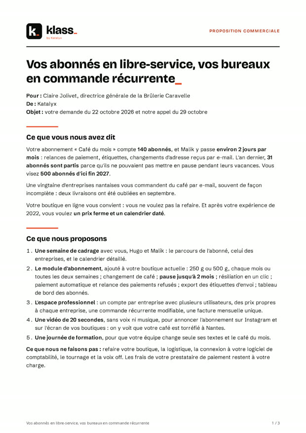
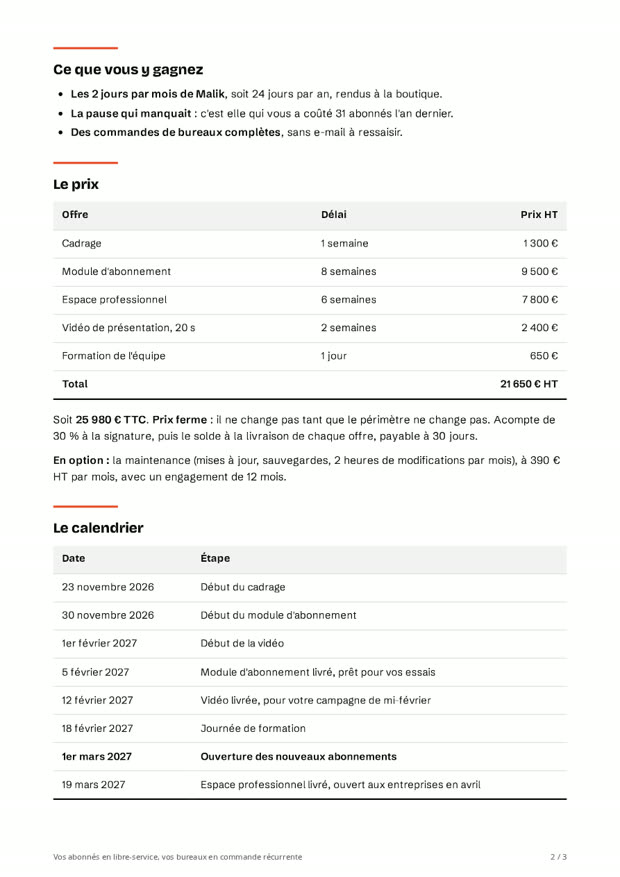
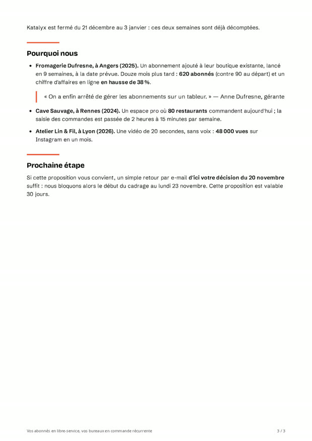
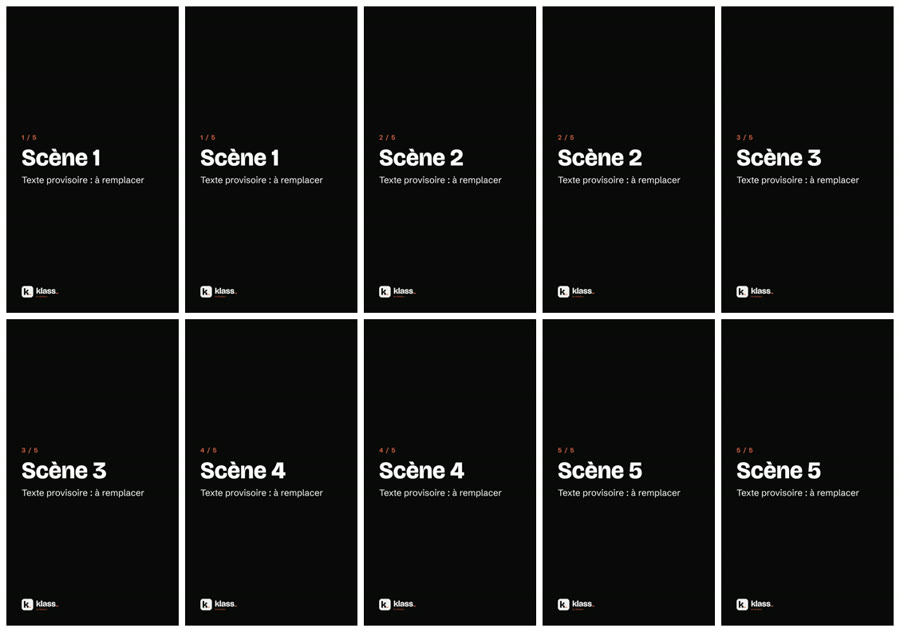

Atelier Klass · dans T3 Code
Faire travailler des agents en confiance_
Passer de « je chatte avec Claude » à « mon environnement fait travailler des agents en confiance ».
Accueil
En sortant, vous saurez préparer un environnement où un agent travaille seul, et en qui vous pouvez avoir confiance.
Deux parcours, trois étapes
- Deux parcours au choix : Proposition ou Vidéo.
- Les trois mêmes étapes : briefer, donner des yeux et une grille, ouvrir une PR « relis-moi ».
- Chaque idée est suivie tout de suite de sa démonstration.
Choisissez votre parcours en haut de la page : la page masque alors les encarts de l'autre parcours, et retient votre choix.
Le client des exercices, la Brûlerie Caravelle (un torréfacteur de café à Nantes), est fictif. Tout ce qu'il faut savoir sur lui est dans le dossier sources/.
Récupérer l'atelier
- Un clic sur le prompt link d'accueil, puis « Clone » : T3 Code récupère le dossier de l'atelier.
- Un prompt link ne lance rien tout seul : il ouvre un brouillon, que vous lisez avant d'envoyer.
- L'agent prépare votre ordinateur pendant que la séance continue : c'est la première démonstration.
- Cliquez sur le prompt link d'accueil, collé dans le chat de la visio.
- « Où ouvrir ce lien ? » La première fois, votre navigateur vous le demande. Choisissez l'app de bureau et cochez « Remember my choice ».
- Cliquez sur « Clone ». T3 Code récupère le dépôt de l'atelier et crée le dossier sur votre ordinateur.
- Lisez le brouillon. Il contient le check d'environnement (ci-dessous) et s'ouvre en Sonnet 5.5, pour préserver votre quota Claude Pro.
- Cliquez sur Envoyer. L'agent installe ce qui manque, puis vous ouvre cette page : vous n'avez rien à taper.
Un prompt link ne lance rien tout seul
Il ouvre un brouillon, sans changer votre mode de permission ni votre branche. T3 Code retire aussi les caractères invisibles (qui pourraient cacher des consignes à l'agent) et vous prévient si le texte en contenait. Le réflexe : on lit avant d'envoyer, comme un e-mail transféré.
Prompt link d'accueilOuvrir le brouillon dans T3 Code
Le texte du check d'environnement : déjà un petit brief
Bonjour ! Je participe à l'atelier Klass « Faire travailler des agents en confiance », et ce projet est le dossier de l'atelier. Prépare mon ordinateur pour les exercices : ils produisent un PDF et ses images, et rendent une courte vidéo. Il me faut Node.js (version 20 ou plus récente), ffmpeg et Google Chrome. 1. Regarde lesquels de ces trois outils sont déjà installés, et en quelle version. 2. Installe ceux qui manquent, et mets à jour Node.js s'il est plus ancien que la version 20. - Sur Mac : avec Homebrew s'il est là ; sinon, choisis la façon la plus simple qui ne demande pas de mot de passe administrateur. - Sous Windows : avec winget. Si une installation va me demander mon mot de passe ou une autorisation de Windows, préviens-moi d'abord, en une phrase, de ce que je vais voir. 3. Installe les dépendances des dossiers proposition/ et video/ du projet, comme l'explique leur CLAUDE.md. Le premier rendu télécharge un navigateur intégré d'environ 120 Mo : autant le faire maintenant, pendant la présentation. 4. Ouvre enfin dans mon navigateur la page support de l'atelier, index.html, à la racine du projet, comme l'explique le CLAUDE.md : j'y trouverai les énoncés et les liens des exercices. N'écris rien dans les fichiers du projet (les dépendances installées ne comptent pas) et ne touche à rien d'autre sur l'ordinateur. Quand c'est fini, réponds par un petit tableau : l'outil, sa version, « déjà là » ou « installé ». Si quelque chose bloque, arrête-toi et dis-moi en une phrase ce que je dois faire.
Le pourquoi
Faire confiance à un agent n'est pas une affaire de formule magique. C'est une affaire d'environnement.
De l'augmentation à l'agency
- Aujourd'hui, l'augmentation : vous réfléchissez avec l'IA, et tout passe par vous, message après message.
- Demain, l'agency : vous préparez l'IA pour qu'elle agisse seule, puis vous revenez voir le résultat.
Ces deux modes d'interaction viennent du cadre AI Fluency (Rick Dakan, Joseph Feller et Anthropic) ; ils sont reformulés ici.
L'échelle de confiance
- Plus on fait confiance à ses agents, moins on les micro-manage, et plus on peut en faire tourner.
- La confiance se construit barreau par barreau : briefer, environnement, vérification, orchestrer.
- On ne saute pas de barreau : un agent mal briefé, sans environnement ni moyen de juger son travail, ne se laisse pas orchestrer.
L'idée vient de Poteto, créateur de pstack, dans son live avec Matt Pocock.
La cuisine étoilée
- On passe de cuisinier à chef : le chef organise la cuisine au lieu de tout faire lui-même.
- L'environnement devient l'ingrédient.
- Le chef reste responsable du plat : c'est sa réputation qui est en jeu.
Le cuisinier amateur
Il fait tout lui-même. C'est nous, quand nous reprenons chaque réponse de l'IA à la main.
La cuisine sans organisation
Des commis sans organisation, c'est le chaos : plus d'agents ne veut pas dire plus de résultats.
Le chef
Il organise la cuisine, les commandes, les réserves, et il signe le plat.
Le meat proxy
- Le meat proxy, c'est l'humain intermédiaire entre l'agent et le résultat : il regarde à sa place, recopie, transmet.
- Le cours cherche à l'éliminer.
Le meat proxy dans votre quotidien
- Vous copiez la réponse de Claude dans un document, puis recollez le document pour qu'il le corrige.
- Vous voyez qu'un tableau déborde du PDF, et vous le lui décrivez avec des mots.
- Vous allez chercher un prix dans un autre fichier pour le lui recopier.
Le mot est de Poteto.
L'intention est le nouveau goulot
- Quand les modèles deviennent très bons, le goulot n'est plus l'agent : c'est votre capacité à exprimer clairement votre intention.
- D'où le premier barreau : briefer.
- Votre métier (savoir ce qu'est une bonne proposition, une bonne vidéo) compte plus que jamais.
Quand les modèles deviennent très bons, l'agent n'est plus le goulot d'étranglement. Le goulot, c'est votre capacité à exprimer clairement votre intention.
Les 4D, notre grille de lecture
- Le cadre AI Fluency décrit quatre compétences pour travailler avec l'IA. Elles recoupent l'échelle de confiance.
Délégation
Décider ce qu'on confie à l'IA, et quand.
Description
Dire clairement l'objectif, le contexte, la forme du résultat.
Discernement
Juger ce que l'IA a produit, sur pièces et sur critères.
Diligence
Rester responsable de ce qui sort de chez nous.
D'après le cadre AI Fluency de Rick Dakan, Joseph Feller et Anthropic (Delegation, Description, Discernment, Diligence), cité et reformulé par Klass, avec nos propres visuels.
Pour aller plus loin : le live de Poteto avec Matt Pocock, « shipping 1,000's of PR's a month » (YouTube), et les skills publiées par Matt Pocock (mattpocock/skills sur GitHub).
Briefer et exercice 1
Un agent ne lit pas dans vos pensées : il fait ce qu'on lui dit, avec ce qu'on lui donne. Le brief est le premier barreau.
Briefer, pas « prompter »
- Briefer, c'est donner à l'agent ce qu'un nouveau collaborateur brillant mais sans contexte aurait besoin de savoir.
- On ne cherche pas une formule magique : c'est pour cela qu'on ne dit pas « prompter ».
- Un bon brief se reconnaît à ce qu'il contient, pas à ses mots-clés.
Anthropic demande de traiter Claude comme un nouveau collaborateur brillant, qui ne connaît ni vos habitudes ni vos dossiers.
Le gabarit en 7 rubriques
- Sept rubriques, chacune répond à une question qu'une recrue arrivée ce matin poserait.
- Le test du collègue : un collègue sans contexte comprendrait-il votre brief ? S'il est perdu, l'agent le sera aussi.
| Rubrique | Ce qu'on y écrit | Pourquoi, et d'où ça vient |
|---|---|---|
| 1. Objectif et pourquoi | Ce qu'on veut obtenir, et à quoi ça va servir. | Le pourquoi aide le modèle à bien choisir là où le brief ne dit rien. Anthropic, Prompting best practices : donner le contexte et la motivation. |
| 2. Pour qui | Le lecteur ou le décideur, et ce qui compte pour lui. | Le ton, la longueur et les arguments en dépendent. Anthropic : le collaborateur brillant qui ne connaît pas vos clients. |
| 3. Sources à lire | Les fichiers où se trouve la vraie donnée : ici, sources/. | L'agent va chercher l'information au lieu de la deviner. Anthropic, Effective context engineering for AI agents. |
| 4. Livrable | Le format, l'endroit où le ranger, et la longueur. | Les modèles récents écrivent volontiers long. Anthropic, guide de Claude Opus 5 : ajuster la longueur à la tâche. |
| 5. Périmètre | Ce qu'on fait, et ce qu'on ne fait pas. | Les modèles récents ont tendance à élargir la tâche. Anthropic, guide de Claude Opus 5 : livrer ce qui est demandé, au périmètre demandé. |
| 6. Critères de succès | À quoi on reconnaîtra un bon résultat : bientôt, la grille. | Un agent ne peut juger son travail que s'il sait ce qu'on attend. Poteto ; Anthropic, Demystifying evals for AI agents. |
| 7. Quand s'arrêter ou demander | Les informations à ne pas inventer, et les portes à sens unique. | L'agent sait où s'arrête sa liberté. Anthropic, Prompting best practices ; les portes à sens unique de Bezos, reprises par Poteto. |
Le test du collègue vient d'Anthropic, Prompting best practices. Saurait-il pour qui il écrit, où trouver les prix, quelle longueur viser, et quand vous appeler ? Si une réponse manque, il manque une rubrique.
Le pourquoi plutôt que les majuscules
- Une règle en majuscules s'applique à la lettre ; une consigne avec son pourquoi se généralise.
- Les modèles récents élargissent le périmètre et écrivent long.
- Le remède : écrire dans le brief le périmètre et la longueur, plutôt que d'exiger des relectures après coup.
Une règle
« JAMAIS de prix TTC seul !!! »
L'agent obéit sans comprendre. Devant un cas imprévu, il devine.
Une consigne avec son pourquoi
« Affiche les prix hors taxes, avec le total TTC en dessous : la cliente compare des devis HT, et elle doit retrouver le montant de son budget. »
L'agent sait ce qu'on cherche, et l'applique là où on n'avait pas pensé à le dire.
Pour le périmètre et la longueur : « Trois pages au plus. Seulement ce fichier. Pas de refonte de la boutique. »
L'exemple d'Anthropic : plutôt que « NEVER use ellipses » (« n'utilise JAMAIS de points de suspension »), expliquer que le texte sera lu par une synthèse vocale, qui ne sait pas prononcer les points de suspension. « Claude can generalize from the explanation » : Claude sait généraliser à partir de l'explication.
La démonstration
- Le formateur tape en direct le brief de la proposition de la Brûlerie Caravelle, rubrique par rubrique.
- Il dit à voix haute pourquoi chaque rubrique est là.
- Il ne le colle pas : un bon brief s'écrit sans formule toute faite, et vous ferez pareil.
Le texte de référence est dans outils/antiseche-brief-demo.md, pour le relire après la séance.
Exercice 1 · briefer
- Le prompt link de départ crée votre branche nominative : votre brouillon parallèle.
- Le brief n'y est pas : c'est l'exercice. Écrivez-le à la main, avec le gabarit en 7 rubriques.
- Faites le test du collègue, envoyez, puis regardez ce que l'agent a produit.
Parcours Proposition
L'objectif : faire rédiger par votre agent la proposition commerciale de la Brûlerie Caravelle, à partir de la source de vérité (sources/), avec votre brief. Le brief, c'est l'exercice : personne ne vous le donne.
- Cliquez sur le prompt link de départ. Il ouvre un brouillon en Sonnet 5.5 : remplacez
[à compléter]par votre prénom, lisez, puis envoyez. L'agent crée votre branche nominative, par exemplecamille/proposition: c'est votre brouillon parallèle, il ne gêne personne. - Écrivez votre brief dans le même thread, avec le gabarit en 7 rubriques. Votre livrable :
proposition/<prénom>/proposition.md, un fichier Markdown (un fichier texte simple, que le rendu mettra en page). Le PDF viendra à l'exercice 2 : ne le demandez pas encore. - Faites le test du collègue. Un associé arrivé ce matin saurait-il pour qui écrire, où trouver les prix, quelle longueur viser, et quand vous appeler ?
- Envoyez, puis ouvrez le fichier que l'agent a écrit (demandez-lui de vous l'ouvrir). Les prix sont-ils ceux de
sources/katalyx/tarifs.md? La cliente retrouverait-elle ses mots ?
Prompt link · exercice 1 PropositionOuvrir le brouillon dans T3 Code
Fini en avance ? Notez ce que vous auriez ajouté à votre brief en voyant le résultat : c'est la matière de l'exercice 2, et peut-être de votre futur CLAUDE.md.
Le texte du prompt link de départ
Je commence l'exercice 1 du parcours Proposition de l'atelier. Mon prénom : [à compléter]. Crée ma branche nominative à partir de main, nommée prénom/proposition (en minuscules et sans accent), et place-toi dessus. Crée aussi le dossier proposition/prénom/. Ne rédige rien d'autre : mon brief arrive dans le message suivant. Réponds seulement par le nom de la branche.
Parcours Vidéo
Votre mission : briefer une vidéo de 20 secondes qui présente la Brûlerie Caravelle, sans voix ni musique. Le projet Remotion est déjà prêt dans video/ : votre agent n'a qu'à modifier la composition. Ce que la cliente attend, et tout ce qu'il faut savoir sur elle, est dans sources/.
- Cliquez sur le prompt link de départ. Il ouvre un brouillon pour le dossier
video/, en Sonnet 5.5 : remplacez[à compléter]par votre prénom, lisez, puis envoyez. L'agent crée votre brancheprenom/video(votre brouillon parallèle), puis attend votre brief. Le brief n'y est pas : c'est l'exercice. - Écrivez votre brief dans le message suivant, à la main, avec le gabarit en 7 rubriques ; le livrable est la vidéo rendue en MP4. Écrivez les critères de succès en mots simples : la grille arrive à l'exercice 2.
- Passez le test du collègue. Un collègue qui ne connaît ni la cliente ni le projet comprendrait-il ? Fixez aussi le périmètre : ce que l'agent peut modifier, et ce qu'il ne touche pas.
- Envoyez, puis laissez l'agent travailler. Il lit les sources, écrit le contenu de la vidéo et la rend. Vous n'avez aucune commande à taper.
- Regardez la vidéo. Demandez à l'agent d'ouvrir
video/out/video.mp4. Pour l'instant, c'est vous qui regardez à sa place : vous êtes son meat proxy. L'exercice 2 lui donne ses propres yeux.
Prompt link · exercice 1 · parcours VidéoOuvrir le brouillon dans T3 Code
Vous avez réussi si votre branche prenom/video existe, si vous avez regardé une vidéo de 20 secondes, et si chaque chiffre et chaque nom qu'elle affiche se retrouve dans sources/. Une seule passe suffit : ne demandez pas de variantes.
Le texte du prompt link de départ
Je commence l'exercice 1 du parcours Vidéo de l'atelier. Mon prénom : [à compléter]. Crée ma branche nominative à partir de main, nommée prénom/video (en minuscules et sans accent), et place-toi dessus. Je travaillerai dans le dossier video/, comme l'explique video/CLAUDE.md. Ne modifie rien d'autre et ne rends rien : mon brief arrive dans le message suivant. Réponds seulement par le nom de la branche.
L'environnement
Un bon brief se donne une fois. L'environnement, lui, travaille à chaque session, sans qu'on ait à le répéter.
Un projet, c'est un dossier
- Dans T3 Code, un projet est un simple dossier sur votre ordinateur : rien n'oblige à y mettre du code.
- CLAUDE.md, à la racine, est lu au début de chaque session : c'est le contexte permanent.
- Claude prend aussi ses propres notes à partir de vos corrections : la mémoire automatique, que vous pouvez consulter et modifier.
Ce que dit le CLAUDE.md de l'atelier
- « Ne devine pas, va chercher dans
sources/. » - « Les portes à sens unique : demande-moi avant. »
- La forme compte : pas de règles en majuscules, mais du contexte, avec le pourquoi.
Ne devine pas, va chercher dans sources/
« Un chiffre, un prix, un nom, une date ou une référence vient de là. S'il n'y est pas, ne le complète pas avec une valeur plausible : écris qu'il manque et demande-le. Pourquoi : un chiffre inventé dans une proposition est exactement l'erreur qu'un client remarque […]. »
Les portes à sens unique : demande-moi avant
« Certaines actions sortent du dossier et ne se rattrapent pas. […] Avant l'une d'elles, arrête-toi, dis ce que tu t'apprêtes à faire, et attends mon accord : envoyer quelque chose au client ; publier ; envoyer un e-mail ou un message ; modifier un Drive ou tout autre document partagé à travers un connecteur ; annoncer un prix à quelqu'un hors de l'équipe. »
Parcours Proposition · le CLAUDE.md de proposition/
L'agent le lit en plus de celui de la racine dès qu'il travaille dans ce dossier. C'est ce qu'un associé expliquerait à un nouveau venu le premier jour :
Installer
Les dépendances du rendu et le navigateur intégré (environ 120 Mo), sur Mac comme sous Windows. C'est l'agent qui installe.
Rédiger
Où ranger une proposition, la forme que le rendu comprend, les prix seulement depuis nos tarifs, et [à demander : …] pour ce qui manque.
Rendre et noter
Rendre le PDF et ses images, les regarder, noter avec la grille, en boucles courtes pour le quota Claude Pro.
Git et Drive
Le PDF ne va pas dans Git. Envoyer au client reste une porte à sens unique. L'agent ne fusionne pas la PR « relis-moi ».
« Ouvre ensuite les images : c'est exactement ce que la cliente verra. Un tableau coupé, un titre seul en bas de page, un texte qui déborde ne se voient que là. Corrige la source Markdown, jamais le PDF, puis rends à nouveau. »
Parcours Vidéo · le CLAUDE.md de video/
Lu en plus de celui de la racine dès que l'agent y travaille. C'est lui que le check d'environnement de l'accueil a suivi pour installer. Il tient en quatre idées :
Va chercher dans sources/
« Tout ce que la vidéo affirme vient de sources/, jamais de ta mémoire ni d'une valeur plausible. »
Un projet déjà prêt
« Tu modifies la composition, tu ne reconstruis pas le projet. » Pourquoi : un abonnement Claude Pro, donc des boucles courtes.
L'installation, expliquée
Remotion, React et le navigateur intégré (environ 120 Mo), une fois pour toutes, sur Mac comme sous Windows.
Des portes à sens unique
« Rien n'est envoyé au client, publié ni posté par toi […]. » Les rendus (MP4, planche) restent hors de Git.
La source de vérité
- La source de vérité, c'est le dossier où l'agent va chercher la vraie donnée (offres, tarifs, références) au lieu de deviner.
- Ici,
sources/: la Brûlerie Caravelle, son brief, les notes d'appel, nos offres, nos tarifs, nos références, et deux anciennes propositions, l'une gagnée et l'autre perdue. - Une information absente ? L'agent la demande, il ne l'invente pas.
Les portes à sens unique
- Ce qui reste dans le dossier est une porte à double sens : Git rattrape tout.
- Ce qui sort du dossier est une porte à sens unique : le retour en arrière n'annule pas un e-mail envoyé.
- Les portes à sens unique sont écrites dans CLAUDE.md : l'agent demande avant.
Git garde chaque version comme un point de sauvegarde, et T3 Code sait revenir en arrière.
Full access, context not control
- Full access : l'agent agit sans demander l'autorisation à chaque étape. C'est un choix assumé.
- Context not control : le Full access donne la liberté, CLAUDE.md le contexte, et nous restons responsables du résultat.
Context not control
Le principe vient du management chez Netflix : donner à son équipe le contexte pour bien décider, plutôt que de tout contrôler soi-même. Sans lâcher la main pour autant : Netflix précise que ce n'est pas du management « hands-off ».
Le Full access est le réglage par défaut des nouveaux threads de T3 Code.
Une demande, pas une garantie
- CLAUDE.md est du contexte, pas un verrou : l'agent le suit presque toujours, mais rien ne l'y oblige mécaniquement.
- Pour bloquer une action à coup sûr, il existe le hook : un petit script que Claude Code déclenche avant une action, et qui peut l'empêcher.
- Nous ne le montrons pas aujourd'hui : retenez qu'il se pose au-delà de CLAUDE.md.
Le deuxième barreau de l'escalade
- Quand l'agent ne fait pas ce qu'on veut, on réfléchit dans l'ordre : l'escalade brief → contexte permanent → skill.
- Une correction faite deux fois va dans CLAUDE.md : c'est du contexte permanent, plus un problème de brief.
- Une skill ne vient qu'après, pour un workflow précis que l'agent ne connaît pas : nous y reviendrons en clôture.
Exemple : si vous redites « jamais de prix sans la mention HT » à chaque proposition, la phrase va dans CLAUDE.md.
Vérification et exercice 2
Le moment fort de la séance : comment un agent peut juger son propre travail, sans qu'on lui dise « vérifie ».
La tension
- Anthropic : les modèles récents se vérifient déjà seuls ; leur dire « vérifie ton travail » les pousse à la sur-vérification.
- Poteto : la vérification est la compétence n°1 ; sans elle, l'humain reste le meat proxy.
- La résolution : on ne dit pas « vérifie », on donne des yeux (le rendu réel) et une grille (des critères notés par des juges séparés).
Le guide d'Anthropic pour Claude Opus 5 ; le live de Poteto avec Matt Pocock. Anthropic va dans le même sens : la vision du modèle est meilleure quand il a des outils pour regarder son rendu.
Sans yeux, pas de boucle
- Aujourd'hui, c'est vous qui ouvrez le rendu et décrivez à l'agent ce qui ne va pas : vous êtes le meat proxy.
- Donnez-lui des yeux : le rendu réel, qu'il regarde lui-même. La boucle tourne alors sans vous.
- Démo des yeux : l'agent rend la proposition, ouvre les images, liste ce que la cliente verrait de travers, corrige la source, rend à nouveau.
Les yeux, en vrai




proposition/exemple/) et la planche contact de la vidéo de départ (video/), au texte encore provisoire.- Proposition : le PDF aux couleurs Klass, puis une image par page.
- Vidéo : la planche contact, 10 vignettes, une toutes les 2 secondes.
- L'agent ouvre ces images comme on ouvre une photo : c'est exactement ce que la cliente verra.
Le rendu : proposition/outils/rendre.mjs, avec le navigateur intégré.
Le rendu : npm run rendre fabrique le MP4, et npm run planche la planche contact. L'associé n'a aucune commande à taper : c'est l'agent qui les lance. Les cases se lisent de gauche à droite, puis de haut en bas : la case 1 est à 1 s, la case 2 à 3 s… la case 10 à 19 s.
La grille
- Les yeux montrent ce qui est ; la grille dit ce qui est bien.
- Chaque dimension est notée par un juge isolé, un sous-agent au contexte neuf qui n'a pas vu la rédaction.
- Il cite le passage, et il peut répondre « Inconnu ».
Un juge par dimension
Il note ce que la cliente verra, pas ce que l'auteur a voulu faire.
Il cite le passage
Une note sans citation ne se discute pas, donc ne sert à rien.
« Inconnu » est permis
Une note devinée est pire qu'une absence de note.
Parcours Proposition · la grille Proposition
proposition/grille-proposition.md note 7 dimensions, de 1 à 5, avec une description de ce que valent le 1, le 3 et le 5.
| Dimension | La question qu'elle pose |
|---|---|
| 1. Compréhension du besoin ★ | La cliente retrouve-t-elle ses mots et ses chiffres ? |
| 2. Valeur chiffrée | Voit-elle ce qu'elle y gagne, en chiffres tirés des sources ? |
| 3. Preuves | Nos références sont-elles réelles, proches et chiffrées ? |
| 4. Clarté du prix et du périmètre ★ | Sait-elle exactement ce qu'elle achète, et combien ? |
| 5. Prochaines étapes datées | Sait-elle quoi faire, et quand ? Le calendrier tient-il ? |
| 6. Ton et charte Klass ★ | Lui parle-t-on comme elle aime, dans un document Klass ? |
| 7. Longueur | La longueur sert-elle sa décision ? |
Démo de la grille : le formateur fait noter sa proposition sur les trois dimensions marquées ★, un juge par dimension. Puis il révèle une branche de démo déjà notée, demo/proposition-notee : la proposition, ses rendus et les notes des sept dimensions.
Pour savoir si une grille est bonne, on la calibre : elle doit mieux noter notre ancienne proposition gagnée que la perdue (sources/propositions-passees/).
Parcours Vidéo · la grille Vidéo
video/grille-video.md note quatre dimensions, chacune 1, 3 ou 5, avec une ancre qui dit à quoi ressemble chaque note.
| Dimension | La question | Ce qu'est un 5, en bref |
|---|---|---|
| Lisibilité | Le texte se lit-il d'un coup d'œil sur un téléphone ? | Contraste net, marges, une idée par scène, 12 mots au plus |
| Charte | La vidéo suit-elle la charte Klass ? | Encre, orange, papier, blanc ; les deux polices ; le logo entier, sur fond sombre en version -on-dark |
| Rythme | Les 20 secondes sont-elles bien réparties ? | 20 secondes pile ; chaque scène assez longue pour être lue et neuve par rapport à la précédente |
| Message | Dit-elle ce que la cliente veut qu'elle dise ? | Qui, ce qui la distingue, ce qui est annoncé, quoi faire ; chaque chiffre vient des sources |
Chaque juge ne reçoit que la planche, les ancres de sa dimension et les pièces que la grille lui assigne (la liste des scènes pour le rythme, les sources pour le message). Il cite les cases qui justifient sa note. La planche ne montre que des images fixes : ce qui dépend du mouvement reste « Inconnu ».
Les règles du juge viennent d'Anthropic, Demystifying evals for AI agents : « grade each dimension with an isolated LLM-as-judge » (noter chaque dimension avec un juge isolé), et lui permettre de « return 'Unknown' » (répondre « Inconnu »). Un juge d'un autre fournisseur (Codex, par exemple) pourrait aussi noter ce que Claude a écrit, avec un autre regard : nous le citons seulement, car il demande un autre abonnement.
Et ensuite : le hill climbing
- L'agent modifie, fait noter, garde si la note monte, annule sinon, et recommence, avec un budget fixe.
- Le piège : on finit par optimiser la grille, pas la proposition ni la vidéo.
- Le remède : un humain lit un échantillon des versions et des notes. On goûte régulièrement les plats.
C'est l'idée de l'autoresearch d'Andrej Karpathy, transposée au contenu. Nous ne le pratiquons pas aujourd'hui.
Exercice 2 · des yeux et une grille
- Le prompt link de départ vous remet sur votre branche, dans un nouveau fil : rappelez l'essentiel de votre brief de l'exercice 1.
- Ajoutez, avec vos mots, les yeux, la grille et les limites.
- Pas de « vérifie ton travail » : vous lui donnez de quoi regarder et de quoi juger.
- Lisez les notes : l'échantillonnage humain, c'est vous.
Parcours Proposition
L'objectif : compléter votre brief pour que votre agent voie sa proposition et la note : des yeux (les pages du PDF en images) et une grille (la grille Proposition).
- Cliquez sur le prompt link de départ de l'exercice 2, complétez votre prénom, lisez, puis envoyez. L'agent prépare le rendu sur votre branche, sans toucher à votre proposition. Ce brouillon est un nouveau fil : l'agent n'y a pas lu votre brief de l'exercice 1.
- Rappelez l'essentiel, puis complétez votre brief, dans ce thread. Dites en deux lignes que la proposition de l'exercice 1 existe déjà sur votre branche et qu'il s'agit de la corriger, pas de la refaire. Rappelez les contraintes de votre premier brief que l'agent doit garder en corrigeant : la longueur, à qui l'on écrit, ce qu'il ne faut pas faire. Puis ajoutez trois choses, avec vos mots :
- les yeux : rendre la proposition en PDF, ouvrir les images des pages, corriger dans le Markdown ce que la cliente verrait de travers ;
- la grille : faire noter la proposition avec
proposition/grille-proposition.md, sur les trois dimensions marquées ★, par un juge isolé par dimension, et ranger les notes dansproposition/<prénom>/notes-grille.md; - les limites : combien de tours au plus (deux suffisent), et ce que l'agent ne fait pas sans vous.
- Envoyez, puis lisez les notes. Pour chaque dimension : êtes-vous d'accord avec la note ? La citation la justifie-t-elle ?
Prompt link · exercice 2 PropositionOuvrir le brouillon dans T3 Code
Si le quota presse, une seule dimension suffit : un juge, c'est un sous-agent de plus sur votre quota. Le PDF et les images restent dans votre dossier, hors de Git ; demandez à l'agent de vous ouvrir le PDF si vous voulez le voir.
Le texte du prompt link de départ
J'en suis à l'exercice 2 du parcours Proposition de l'atelier. Mon prénom : [à compléter]. Ma proposition est dans proposition/prénom/proposition.md : place-toi sur ma branche prénom/proposition si tu n'y es pas déjà. Prépare ensuite le rendu : si les dépendances de proposition/ ne sont pas encore installées, installe-les comme l'explique proposition/CLAUDE.md. Ne rends rien encore et ne modifie pas ma proposition : la suite de mon brief arrive dans le message suivant. Réponds en une phrase quand c'est prêt.
Parcours Vidéo
Votre mission : donner à votre agent des yeux et une grille, puis le laisser corriger sa vidéo une fois.
- Cliquez sur le prompt link de départ. Complétez votre prénom, lisez, puis envoyez : il vous remet sur votre branche
prenom/video, dans le dossiervideo/, en Sonnet 5.5. Le brief de la correction n'y est pas. Ce brouillon est un nouveau fil : l'agent n'y a pas lu votre brief de l'exercice 1. - Rappelez l'essentiel, puis complétez votre brief avec trois choses. Dites en deux lignes que la vidéo de l'exercice 1 existe déjà sur votre branche et qu'il s'agit de la corriger, pas de la refaire. Puis ajoutez :
- Les yeux : le rendu Remotion et la planche contact. Le CLAUDE.md de
video/explique à l'agent comment les fabriquer : dites-lui seulement de s'en servir. - La grille : les critères de succès deviennent ceux de
video/grille-video.md. Visez 5. - Les juges et le budget : deux dimensions de votre choix, chacune notée par un juge séparé (deux, pas quatre, pour ménager votre quota), et une seule boucle de correction.
- Les yeux : le rendu Remotion et la planche contact. Le CLAUDE.md de
- Envoyez, puis lisez les notes. Pour chaque dimension, l'agent vous rapporte une note ou « Inconnu », avec les cases citées. Demandez-lui d'ouvrir
video/out/planche-contact.pnget retrouvez ces cases vous-même. - Jugez à votre tour. Êtes-vous d'accord avec les juges ? Une correction manque-t-elle ? Inutile de relancer : notez-le, c'est l'échantillonnage humain.
Prompt link · exercice 2 · parcours VidéoOuvrir le brouillon dans T3 Code
Vous avez réussi si video/out/planche-contact.png existe, si deux dimensions ont une note citant des cases, et si la vidéo a été corrigée une fois d'après ces notes. Les rendus restent dans out/ : ils ne vont pas dans Git.
Le texte du prompt link de départ
J'en suis à l'exercice 2 du parcours Vidéo de l'atelier. Mon prénom : [à compléter]. Place-toi sur ma branche prénom/video si tu n'y es pas déjà : la vidéo de l'exercice 1 y est, dans video/src/contenu.js. Si les dépendances de video/ ne sont pas encore installées, installe-les comme l'explique video/CLAUDE.md. Ne rends rien encore et ne modifie pas la vidéo : la suite de mon brief arrive dans le message suivant. Réponds en une phrase quand c'est prêt.
Orchestrer et exercice 3
Un agent briefé, dans un bon environnement, qui sait juger son travail : on peut maintenant en faire tourner plusieurs.
Le brouillon parallèle
- Un brouillon parallèle, c'est une branche ou un worktree : une version de travail qui ne touche pas la version de référence.
- Plusieurs threads, chacun sa branche (« New worktree ») : plusieurs agents en même temps, sans se marcher dessus.
- Le même brief à deux modèles, chacun dans son brouillon : vous comparez, vous gardez le meilleur.
T3 Code pilote plusieurs fournisseurs : si vous avez aussi Codex, par exemple, il peut relire ce que Claude a écrit. C'est une possibilité, pas un prérequis de l'atelier.
Le nouveau flow d'équipe
- Les sources vivent dans le dépôt, et on travaille directement sur
main. - On ouvre une PR « relis-moi » seulement avant une porte à sens unique : « ça part chez le client demain ».
- Les rendus finaux (PDF, MP4) circulent toujours par Drive ou Chat : on arrête seulement de s'envoyer les sources.
Avant
Chacun travaille dans son coin ; les documents et leurs versions circulent par WhatsApp ou Google Chat ; on ne sait plus quelle version est la bonne.
À partir de lundi
Un seul rituel nouveau, la PR « relis-moi », placé là où il protège vraiment.
Pendant la séance, chacun travaille sur sa branche nominative (par exemple prenom/proposition), créée par l'agent à l'exercice 1 : trois brouillons parallèles visibles sur GitHub, sans conflit. En dehors du cours, la règle « directement sur main » s'applique.
La relecture en rond
- Chacun fait ouvrir sa PR « relis-moi » par son agent, puis relit celle de l'associé suivant.
- On relit et on commente. On ne fusionne pas : la décision d'envoyer reste à l'auteur.
Les lettres A, B et C sont attribuées en début d'exercice.
Exercice 3 · la PR « relis-moi »
- Le scénario : votre livrable part chez la cliente demain. C'est une porte à sens unique.
- Votre agent ouvre votre PR « relis-moi » : ce qui part, ce qu'il faut regarder, votre question. Sans le PDF ni le MP4.
- Vous relisez la PR de l'associé suivant et vous la commentez, sans fusionner.
Parcours Proposition
Le scénario : votre proposition part chez la Brûlerie Caravelle demain. C'est une porte à sens unique, alors vous demandez à un associé de la relire avant : votre agent ouvre votre PR « relis-moi », et vous relisez celle de l'associé suivant.
- Cliquez sur le prompt link de départ de l'exercice 3. Complétez votre prénom, lisez, puis envoyez : il vous remet sur votre branche
prenom/proposition, pose le scénario (« ma proposition part chez la cliente demain ») et vous laisse écrire la demande dans le message suivant. - Demandez l'ouverture de la PR. Avec vos mots, dites à l'agent ce qui part et quand, ce que la personne qui relit doit regarder, et la question que vous lui posez (par exemple : « le calendrier te paraît-il tenable ? »). Rappelez que la PR contient votre proposition et ses notes de grille, mais pas le PDF : il circule par Drive ou Chat. Précisez que personne ne fusionne, et demandez-lui le lien de la PR.
- Relisez la PR de l'associé suivant, dans l'ordre de la relecture en rond. Envoyez le lien de votre PR dans le chat de la visio, et ouvrez celui de l'associé suivant (ou l'onglet « Pull requests » du dépôt sur GitHub). S'il est sur le parcours Proposition, regardez sa proposition et ses notes. S'il est sur le parcours Vidéo, lisez sa description puis
video/src/contenu.js, le texte de ses scènes : retrouvez-vous chaque chiffre et chaque nom danssources/? Le MP4 n'est pas dans la PR : demandez-le à son auteur si vous voulez voir la vidéo. Puis laissez un commentaire qui répond à sa question, s'il en pose une. - Ne fusionnez pas. Relire et commenter suffit : la décision d'envoyer reste à l'auteur.
Prompt link · exercice 3 PropositionOuvrir le brouillon dans T3 Code
Vous avez réussi si votre PR est ouverte avec une description claire et votre question, si l'onglet des fichiers modifiés ne contient ni PDF ni images de pages, et si vous avez commenté la PR d'un autre sans la fusionner.
Le texte du prompt link de départ
Ma proposition pour la Brûlerie Caravelle part chez la cliente demain, et je veux qu'un associé la relise avant. Mon prénom : [à compléter]. Place-toi sur ma branche prénom/proposition si tu n'y es pas déjà, puis dis-moi en une phrase ce qui a changé dans proposition/prénom/ par rapport à main. N'enregistre rien, ne pousse rien et n'ouvre pas encore de PR : ma demande pour la PR « relis-moi » arrive dans le message suivant.
Parcours Vidéo
Le scénario : votre vidéo part chez la cliente demain. Avant cette porte à sens unique, vous demandez à un associé de la relire. Votre mission : faire ouvrir votre PR « relis-moi » par votre agent, puis relire et commenter celle de l'associé suivant, sans fusionner.
- Cliquez sur le prompt link de départ. Complétez votre prénom, lisez, puis envoyez : il vous remet sur votre branche
prenom/video, pose le scénario (« ma vidéo part chez la cliente demain ») et vous laisse écrire la demande dans le message suivant. - Demandez l'ouverture de la PR. Dites ce qui part demain, ce que la personne qui relit doit regarder, et que le MP4 ne va pas dans Git : il circule par Chat ou Drive, la PR dit seulement où le trouver. Précisez que personne ne fusionne. Collez enfin les notes de la grille que l'agent vous a rapportées à l'exercice 2 (ou dites que vous ne les avez plus) : ce brouillon est un nouveau fil, il ne les connaît pas.
- Relisez la PR de l'associé suivant (A relit B, B relit C, C relit A). Votre agent vous donne le lien de votre PR : envoyez-le dans le chat de la visio, et ouvrez celui de l'associé suivant (ou l'onglet « Pull requests » du dépôt sur GitHub). Lisez sa description puis les fichiers modifiés, surtout
video/src/contenu.js: retrouvez-vous chaque chiffre et chaque nom danssources/? Si vous voulez voir la vidéo, demandez le MP4 à son auteur. Si cet associé est sur le parcours Proposition, lisez à la place le fichier de sa proposition. - Commentez, sans fusionner. Laissez deux commentaires : une chose qui marche, et une question ou un point à changer.
Prompt link · exercice 3 · parcours VidéoOuvrir le brouillon dans T3 Code
Vous avez réussi si votre PR est ouverte avec une description claire, si l'onglet des fichiers modifiés ne contient ni MP4 ni planche contact, et si vous avez commenté la PR d'un autre sans la fusionner.
Le texte du prompt link de départ
Ma vidéo pour la Brûlerie Caravelle part chez la cliente demain, et je veux qu'un associé la relise avant. Mon prénom : [à compléter]. Place-toi sur ma branche prénom/video si tu n'y es pas déjà, puis dis-moi en une phrase ce qui a changé dans video/src/ par rapport à main. N'enregistre rien, ne pousse rien et n'ouvre pas encore de PR : ma demande pour la PR « relis-moi » arrive dans le message suivant.
« Pourquoi pas Cowork ? »
- Cowork, dans Claude Desktop, vise les non-développeurs, et ses tâches planifiées tournent dans le cloud, même ordinateur éteint.
- Mais il ne fonctionne qu'avec Claude, n'intègre pas Git, et ses sessions ne se partagent pas.
- T3 Code apporte plusieurs fournisseurs, Git et les PR intégrés, l'open source, et le même outil pour toute l'équipe.
D'autres façons de partager, pour mémoire
Les guest links de T3 Code (en bêta) laissent un collègue suivre un thread dans son navigateur, pour un temps limité. Les artifacts publient une page sur claude.ai. Nous ne les utilisons pas aujourd'hui.
Mobile
Lancez une tâche depuis votre téléphone, et allez prendre un café.
Le téléphone n'est qu'une télécommande
- Installez l'app, reliez-la à votre ordinateur, lancez une tâche… et rangez le téléphone : c'est l'agency.
- C'est votre ordinateur qui travaille : il reste allumé, connecté, avec l'app T3 Code ouverte.
- Installez l'app T3 Code sur votre téléphone : App Store (iPhone) ou Google Play (Android).
- Rendez votre ordinateur joignable. Dans l'app de bureau, ouvrez Settings → Sharing & access, connectez-vous et activez T3 Connect.
- Reliez le téléphone. Dans l'app mobile, connectez-vous au même compte T3 Connect et choisissez votre ordinateur.
- Lancez une tâche dans le projet de l'atelier, par exemple : « Résume en cinq lignes ce que la Brûlerie Caravelle attend de nous, d'après sources/. » Puis rangez le téléphone : l'agent travaille sans vous.
Fermer la dernière fenêtre de l'app de bureau arrête le serveur local : le téléphone n'a alors plus rien à commander.
Ouverture et clôture
Le dernier barreau de l'escalade, ce qui vient après, et ce qu'on retient.
Le dernier barreau : la skill
- La skill
/proposition-klassest le dernier barreau de l'escalade brief → contexte permanent → skill. - On ne la monte qu'au troisième playbook identique.
- Elle est déjà prête : le déroulé, la grille, le script de rendu.
Le déroulé
Lire la source de vérité, rédiger selon le plan qui a gagné, rendre et regarder, noter, rendre compte, s'arrêter avant toute porte à sens unique.
La grille
Elle renvoie à proposition/grille-proposition.md, avec le brief type d'un juge isolé.
Le script de rendu
Elle s'appuie sur proposition/outils/rendre.mjs : ce qui doit être identique à chaque fois est un script, pas une consigne.
Elle vit dans .claude/skills/proposition-klass/SKILL.md, un simple fichier texte. Pour la lancer, tapez $ dans le composeur de T3 Code et choisissez proposition-klass (ou tapez /proposition-klass dans Claude Code), suivi de votre prénom et de ce qui change cette fois. Elle ne se lance pas toute seule quand vous rédigez votre propre brief.
C'est la seule skill de l'atelier, et ce n'est pas un hasard : la documentation de Claude Code conseille de bâtir son environnement au fil du temps et de faire la tâche sans skill d'abord ; une skill sert à un workflow précis que l'agent ne connaît pas déjà.
Le récapitulatif
- Briefer : donner à l'agent ce qu'un nouveau collaborateur brillant mais sans contexte aurait besoin de savoir.
- Environnement : un dossier, un CLAUDE.md, une source de vérité ; les portes à sens unique écrites comme du contexte.
- Vérification : pas de « vérifie » : des yeux et une grille.
- Orchestrer : des brouillons parallèles, et une PR « relis-moi » avant chaque porte à sens unique.
Et après ?
- Les boucles externes : demain, c'est un événement qui lance l'agent, pas vous.
- La vidéo : la même méthode ; faites l'autre parcours à votre rythme, avec cette page.
- D'autres cours pourront suivre, à partir de ce que vous en ferez dès lundi.
Les boucles externes
Une tâche planifiée (chaque lundi, une veille sur un prospect), ou un webhook (un formulaire rempli, un e-mail reçu). T3 Code les propose dans les réglages du projet.
La vidéo
Un projet de départ, des yeux (une planche contact), une grille : ceux qui ont fait le parcours Proposition peuvent faire le parcours Vidéo.
Cette page
Elle reste dans votre dossier : index.html. Demandez à votre agent de vous l'ouvrir quand vous voulez.
Marge
La marge absorbe d'abord le débordement : on ne coupe pas un exercice en cours. Ensuite, l'atelier.
Atelier · à quel niveau va cette correction ?
- Repérez une correction que vous répétez, dans vos vraies conversations avec Claude.
- Rangez-la au bon niveau de l'escalade brief → contexte permanent → skill.
- Écrivez la phrase exacte, et dites-la aux autres.
- Repérez une correction que vous répétez. Parcourez vos dernières conversations avec Claude (sur claude.ai ou dans T3 Code) et cherchez ce que vous avez dû redire : un ton, une longueur, un format, une donnée qu'il invente. Le prompt link ci-dessous vous aide à les repérer.
- Rangez-la au bon niveau, avec le tableau ci-dessous.
- Écrivez la phrase que vous mettriez dans votre brief ou dans votre CLAUDE.md, et dites-la aux autres en une phrase.
| Si la correction… | Elle va… | Exemple |
|---|---|---|
| ne concerne que cette tâche | dans le brief | « Cette proposition fait trois pages au plus. » |
| revient d'une tâche à l'autre (faite deux fois) | dans le contexte permanent : CLAUDE.md ou la mémoire | « Nos prix s'affichent toujours hors taxes, avec la mention HT. » |
| est un même déroulé en plusieurs étapes, recollé pour la troisième fois | dans une skill, et seulement si l'agent ne sait pas déjà le faire | « Préparer une proposition : lire les sources, rédiger, rendre le PDF, noter avec la grille. » |
| doit arriver, ou ne jamais arriver, à coup sûr | au-delà : un script ou un hook | « Aucun e-mail ne part sans validation. » |
Prompt link de l'atelierOuvrir le brouillon dans T3 Code
Le texte du prompt link de l'atelier
J'utilise Claude depuis des mois en conversation, et je reprends souvent les mêmes choses dans ses réponses. Aide-moi à repérer ces corrections répétées, pour décider où chacune doit vivre. Je vais te coller quelques extraits de mes anciennes conversations, là où j'ai dû reprendre ta réponse. Si je n'en ai pas sous la main, pose-moi plutôt cinq questions courtes sur mon travail : le type de documents que je produis, ce que je corrige le plus souvent, ce qui m'agace. Ensuite, rends-moi un tableau de trois à cinq lignes : la correction, à quelle fréquence elle revient, et où elle doit aller : - dans le brief, si elle ne concerne qu'une tâche ; - dans le contexte permanent (CLAUDE.md ou la mémoire), si elle revient d'une tâche à l'autre ; - dans une skill, seulement si c'est un même déroulé en plusieurs étapes que je recolle pour la troisième fois. Pour chaque ligne, propose la phrase exacte que j'écrirais. N'écris rien dans les fichiers : c'est moi qui choisirai ce que je garde.
Le vocabulaire de l'atelier
Les mots du cours, employés tels quels dans les supports, les exercices et par les agents.
Les dix termes
| Terme | Ce qu'il veut dire |
|---|---|
| briefer | Donner à un agent tout ce qu'un nouveau collaborateur brillant mais sans contexte aurait besoin de savoir : objectif et pourquoi, pour qui, sources à lire, livrable, périmètre, critères de succès, quand s'arrêter ou demander. On ne dit pas « prompter » : on ne cherche pas une formule magique, on donne du contexte à un collaborateur. |
| échelle de confiance | La progression de Poteto (trust ladder) : plus on fait confiance à ses agents, moins on les micro-manage et plus on peut en faire tourner. Barreaux du cours : briefer → environnement → vérification → orchestrer. |
| meat proxy | L'humain qui fait l'intermédiaire entre l'agent et le résultat (il regarde à sa place, recopie, transmet). Le cours cherche à l'éliminer. |
| des yeux et une grille | La vérification telle que le cours l'enseigne : on ne dit pas à l'agent « vérifie », on lui donne des yeux (le rendu réel : pages du PDF en images, planche contact d'une vidéo) et une grille (des critères notés, par des juges séparés). |
| porte à sens unique / porte à double sens | Une action irréversible (envoi au client, publication, e-mail, modification d'un Drive, prix annoncé) ou réversible (tout ce qui reste dans le dossier versionné par Git). D'après Bezos, repris par Poteto. |
| brouillon parallèle | Une branche ou un worktree : une version de travail qui ne touche pas la version de référence. |
| PR « relis-moi » | Une pull request ouverte seulement avant une porte à sens unique, pour demander à un associé de relire. Le reste du travail va directement sur main. |
| source de vérité | Le dossier où l'agent doit aller chercher la vraie donnée (offres, tarifs, références) au lieu de deviner ou d'inventer. |
| escalade brief → contexte permanent → skill | L'ordre de réflexion avant d'outiller un agent : d'abord un meilleur brief, puis du contexte permanent (CLAUDE.md, mémoire) quand une correction revient, puis une skill seulement pour un workflow précis et non natif. Au-delà : script ou hook. |
| context not control | Principe de management Netflix : donner du contexte plutôt que contrôler, sans pour autant lâcher la main. Il justifie le Full access accompagné des portes à sens unique écrites dans CLAUDE.md. |